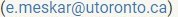
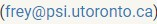

ECE421 - Fall 2024
ECE421: Introduction to Machine
Learning
University of Toronto
(Downtown)
Electrical and Computer Engineering
Fall
2024
This course is designed as an in-person course aimed at introducing the basic theory, the fundamental algorithms, and the computational toolboxes of machine learning. The focus is on a balanced treatment of the practical and theoretical approaches, along with hands on experience with relevant software packages. Supervised learning methods covered in the course will include: the study of linear models for classification and regression, neural networks. Unsupervised learning methods covered in the course will include: k-means clustering, and Gaussian mixture models. Techniques to control overfitting, including regularization and validation, will be covered. Furthermore, this course introduces the fundamental of Markov Decision Process and Reinforcement Learning.
For your convenience, all lectures and instructor’s Office Hours will be also live-streamed over Zoom. Furthermore, all lectures will be recorded and posted on the course website. Note that tutorials won’t be recorded and live-streamed.
Course Staff
Instructor

Instructor
TA
TA
TA
TA
TA
Logistics
- Instructors:
- Erfan Meskar 
- Brendan Frey 
- Lectures: you can attend the lectures both
in-person and over Zoom.
- LEC0101:
- Monday, 9:00 AM - 11:00 AM, SF 3202
- Wednesday, 9:00 AM - 10:00 AM, SF 3202
- LEC0102:
- Wednesday, 10:00 AM - 12:00 PM, SF 3202
- Thursday, 9:00 AM - 10:00 AM, BA 1180
- LEC0101:
- Tutorials:
- TUT0101: Wednesday, 12:00 PM - 2:00 PM, Room SF 2202 (in-person only)
- TUT0102: Wednesday, 12:00 PM - 2:00 PM, Room GB 304 (in-person only)
- TUT0103: Wednesday, 12:00 PM - 2:00 PM, Room GB 120 (in-person only)
- Office hours:
- Erfan Meskar (Pratt Building 371): Thursdays 10:00 AM - 12:00 PM
- Brendan Frey (BA 4136): Monday 4:00 PM - 5:00 PM
- Mohammad Yaghini (GB441): Monday 12:00 PM - 1:00 PM
- Mustafa Ammous (Zoom): Tuesday 12:00 PM - 1:00 PM
- Wen Xu (BA8176): Wednesday 5:00 - 6:00 PM
- Kai Wang (Zoom): Thursday 12:00 PM - 1:00 PM
- Aristeidis Seretis (BA4170): Friday 12:00 PM - 1:00 PM
- Contact:
- Students should ask all course-related questions in course
Piazza channels.
- For personal matters only, email instructor.
- Students should ask all course-related questions in course
Piazza channels.
- Announcements: All announcements will be made in Piazza.
Coursework
- Programming Assignments (40%)
- There will be 4 assignments, each worth 10%.
- You may complete them individually or in pairs, and you are free to change partners for each assignment.
- Only one submission from a group member is required. Assignments must be submitted on Quercus, and the submission deadline will be at 11:59 PM.
- Group members will receive the same grade.
- Midterm (25%)
- The midterm is closed book, 2 hours, and scheduled for Monday, October 21, 9:00 AM - 11:00 AM, which will test the content of the weeks before the test.
- Allowed Calculator Types: Type 2 (i.e., All non-programmable electronic calculators)
- Exam Paper Type: Type A (i.e., a closed book examination, no aids are permitted other than the information printed on the examination paper.)
- Final Exam (35%)
- The final exam is closed book, comprehensive, 2 hours and 30 minutes, and held during the exam period.
- Allowed Calculator Types: Type 2 (i.e., All non-programmable electronic calculators)
- Exam Paper Type: Type A (i.e., a closed book examination, no aids are permitted other than the information printed on the examination paper.)
All (currently tentative) deadlines are listed in the schedule. Note that due dates may change based on how the course is progressing.
Submitting Coursework
- Do not submit your coursework via email.
- If anything goes wrong, please ask a question in Piazza or contact a course assistant.
- You can submit as many times as you’d like until the deadline. We will only grade the last submission.
- Partial work is better than not submitting any work.
Late Days
5% deduction will be applied per day of lateness. No Submissions will be accepted after 72 hours except for documented unusual circumstances
Regrade Requests
Regrade requests are due within 1 week of receiving the graded work and must be submitted by posting a private questions on Piazza.
- We ask that you carefully review your assignments, reflect, and write a short explanation justifying the reasons for a regrading request.
- If a grade is contested and we realize that the marker made a mistake in the student’s favour, the mark for that assignment may be lowered when the mistake is found. This would otherwise create a situation which is unfair to other students.
- Please include your full name and UTORid in the body of the private note.
Recommended Textbooks
- LFD: Learning From Data, AMLBook, 2012
- AIMA: Artificial Intelligence: A Modern Approach, 4th US ed.
- PRML: to an external site.: Pattern Recognition and Machine Learning
- DL: to an external site.: Deep Learning, by Goodfellow, Bengio and Courville
- SLP: to an external site.: Speech and Language Processing, by Jurafsky and Martin
Course Schedule
Note that in table below,
- pre refers to pre-lecture note, which include incomplete sections to be filled in during lecture.
- post refers to post-lecture note, representing the completed version of the pre-lecture note.
- vid refers to the screencast recording of lecture.
| Week | Topics | Readings | Notes and Recordings |
Tutorials | Coursework |
|---|---|---|---|---|---|
| 1 (Erfan) |
- Course Logistics - Intro to ML - Nearest Neighbors - Linear Classification |
LFD: 1.1-1-2 | • Part 1: pre,
post, vid • Part 2: pre, post, vid • Part 3: pre, post, vid |
No Tutorial | |
| 2 (Erfan) |
- Linear Regression - Regularization |
LFD: 3.2.1, 3.4.1 Appendix B |
• Part 1: pre, post, vid • Part 2: pre, post, vid • Part 3: pre, post, vid |
Makeup lecture for LEC0101 due to Labour Day | 📢 A1 out 📆 Due on September 26, 11:59 PM - A1 cover - A1 Google Colab notebook |
| 3 (Erfan) |
- Logistic Regression | LFD: 3.3 | • Part 1: pre, post, vid • Part 2: pre, post, vid • Part 3: pre, post, vid |
Worksheet
1 - solution |
|
| 4 (Erfan) |
- Gradient Descent | LFD: 3.3 DL: 8.3.1-8.3.3 (recommended) |
• Part 1: pre, post, vid • Part 2: pre, post, vid • Part 3: pre, post, vid |
Worksheet
2 - solution |
⏰ A1 due |
| 5 (Brendan) |
- Unsupervised Learning - Clustering, k-means clustering - Density Estimation - Mixture of Gaussians - Hard-assignment learning of MoG - EM: Soft assignment |
PRML: 9.1, 9.2 | • Part 1: pre,
post, vid • Part 2: pre, post, vid |
Worksheet
3 - solution |
📢 A2 out 📆 Due on Oct. 18, 11:59 PM - A2 cover - A2 Python files - A2 Google Colab notebook - A2 LATEX template |
| 6 (Brendan) |
- Deep Learning - Neural Networks - Backpropagation |
LFD: Sec 7.1, 7.2 DL: Ch 14 |
• Part 1: pre,
post, vid • Part 2: pre, post, vid |
Worksheet
4 - solution |
|
| 7 (Erfan & Brendan) |
- Thanksgiving Day! - Midterm Review |
• Review | Worksheet
5 - solution |
⏰ A2 due 📢 Sample midterm out 📬 Sample midterm solution posted 🔎 Available on Piazza |
|
| 8 (Brendan) |
- Deep Learning in Practice - Dropout |
LFD: 7.2 DL: 7.12, 8.4, 8.5 (recommended) |
• Midterm • Part 1: pre, post, vid |
Makeup lecture for LEC0101 due to Thanksgiving | ⏰ Midterm is on Monday 📢 A3 out 📆 Due on Nov. 15, 11:59 PM - A3 cover - A3 Python files - A3 Google Colab notebook - A3 LATEX template |
| Reading Week | |||||
| 9 (Brendan) |
- Convolutional Nets - Recurrent Nets - Translation & Seq2Seq Models - Language Models - LSTM - Transformers & Attention |
CNN: PRML 5.5.6, DL 9; RNN: DL 10.1, 10.2; Seq2Seq: DL 10.4; LSTM: DL 10.10; Transformers & Attention: SLP 9 |
• Part 1: pre, post, vid • Part 2: pre, post, vid |
Guest Lecture by Albi Celaj - slides - recording |
|
| 10 (Erfan) |
- Markov Decision Process | AIMA: 16 | • Part 1: pre,
post, vid • Part 2: pre, post, vid • Part 3: pre, post, vid |
Worksheet
6 - solution Guest Lecture by Shreshth Gandhi - slides - recording |
⏰ A3 due |
| 11 (Erfan) |
- Reinforcement Learning | AIMA: 23.1-23.4 | • Part 1: pre,
post, vid • Part 2: pre, post, vid • Part 3: pre, post, vid |
Guest Lecture by Professor Bo Wang - slides - recording |
📢 A4 out 📆 Due on Dec. 4, 11:59 PM - A4 cover - A4 Python files - A4 Google Colab notebook - A4 LATEX template |
| 12 (Erfan) |
- Reinforcement Learning, cont’d | AIMA: 23.1-23.4 | • Part 1: pre,
post, vid • Part 2: pre, post, vid • Part 3: pre, post, vid |
Worksheet
7 - solution |
|
| 13 (Erfan & Brendan) |
- Course Review | • Part 1: vid • Part 2: vid • Part 3: vid |
Sample
final - solution |
⏰ A4 due |